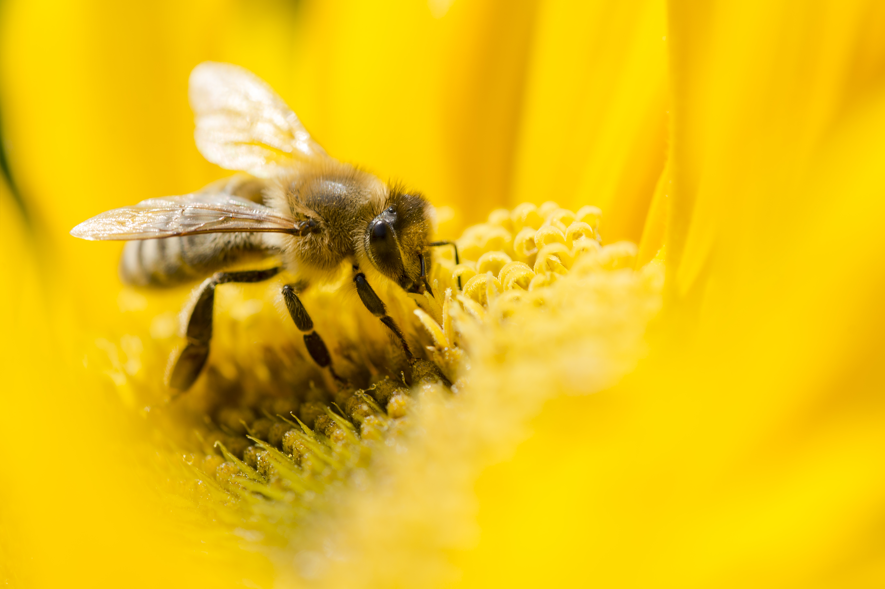

Abeilles
/ Les abeilles Introduction :
Il y a entre 30 000 et 100 000 abeilles dans une ruche selon la saison. Les reines pondent entre 1800 et 2 500 oeufs par 24 heures. Les abeilles vivent 1 mois en été quand elles travaillent et 6 mois en hiver quand elles ne travaillent pas. Une reine vit 2 ou 3 ans maximum. Tous les mâles meurent quand ils fécondent la reine car elle leur sectionne le sexe. Une ruche donne environ 4 kgs de miel par jour pour environ 500 abeilles (suivant les fleurs).
Comment s'orientent-elles quand elles volent ?
Elles se donnent des point de repère dès que la ruche est installées. L'organisation des abeilles Les abeilles sont très organisées. Il y a la reine, des ventileuses, des ouvrières, des guerrières, etc.
Est - ce que les abeilles sont comme les fourmis ?
Elles chassent la reine pour qu'une nouvelle reine la remplace. Elles partent quant la ruche devient trop forte.
Comment se nourrissent les larves ?
Elles se nourrissent avec le miel. Les larves naissent dans un rayon. Les différentes abeilles : Dans la ruche il y a plusieurs sortes d'abeilles : le faux bourdon, la nourrice et la reine.

/ Est - ce qu'on peut compter toutes les abeilles d'une ruche ?
Oui en les pesant (1000 abeilles = 1 kg) Le poids est de 15 kg quand on sort le miel. Trois jours après les cellules royales contiennent le maximum de gelée ; celle -ci est alors prélevée par l'apiculteur et immédiatement conservée au froid. Durée de vie La durée de vie d'une abeille est de 1 a 6 mois. La reine vie de 1 à 4 ans. La vie sociale des abeilles Les abeilles réunissent les espèces solitaires comme les abeilles charpentières qui creusent leur nid dans les bois et des espèces sociales telles que les bourdons et les abeilles vraies.
Ce sont des insectes appartenant à l'ordre des hyménoptères se nourrissant de miel, de pollen et de nectar et dont la particularité est de produire du miel et de la cire. Les abeilles Les abeilles ne pondent pas. C'est la reine qui pond. Elles vivent en groupe avec la reine. Les abeilles ne piquent pas deux fois mais une. Les guêpes, elles, piquent plusieurs fois. Les mâles Les mâles fécondent la reine mais après avoir fécondé la reine ils meurrent. La reine La reine est fécondée par plusieurs mâles. Elle a un plus gros abdomen. Elle pond entre 1800 et 2500 oeufs par 24 heures.

/ Combien de temps vivent les abeilles ?
Elles vivent 1 mois. La reine vit 3 à 4 ans suivant les difficultés de la ruche.
Combien la reine pond elle de larves par jour ?
La reine pond de 1 800 à 2 500 larves par Jour. Elles naissent 21 jours après.
Que mangent les larves ?
Toutes les larves sont nourries par du miel et du pollen. A partir du 6ème jour on donne de la gelée royale à quelques larves qui deviendront des reines.
Combien la reine pond-elle d'oeuf en 24h ?
Elle pond entre 1800 et 2500 en 24h.
Combien de temps vie une reine ?
Une reine vie entre 2 et 3 ans.
Comment l'abeille se transforme en reine ?
Elle est nourrit à la gelée royale pendant quelle est une larve.
Comment se passe la reproduction chez les abeilles ?
Le mâle féconde la reine puis il meurt car elle lui sectionne le sexe.